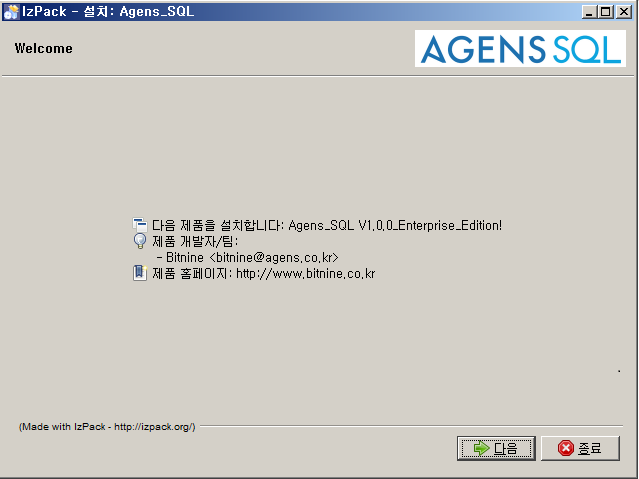
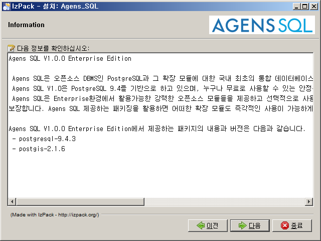
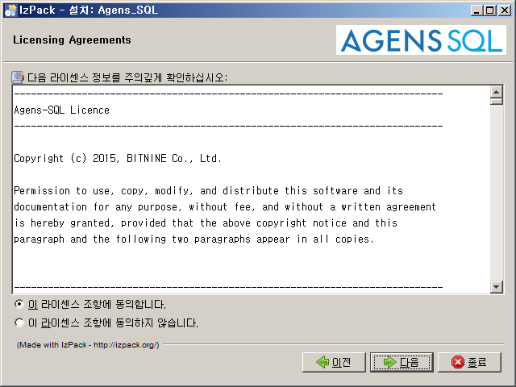
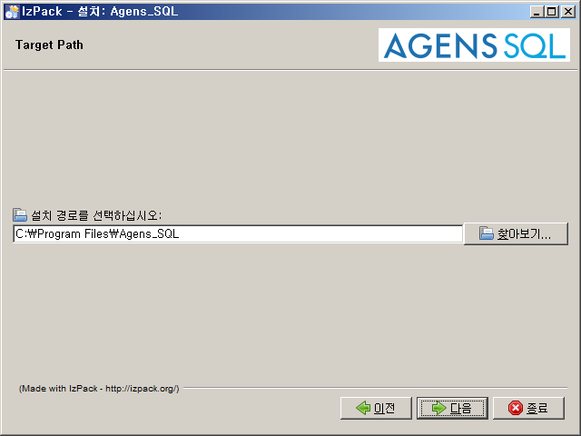
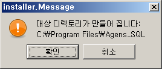
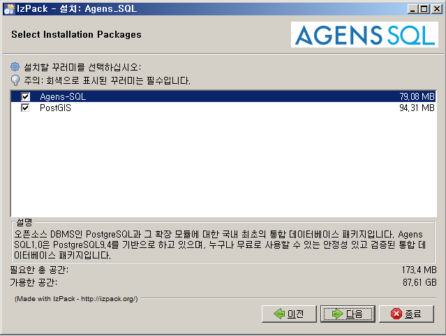
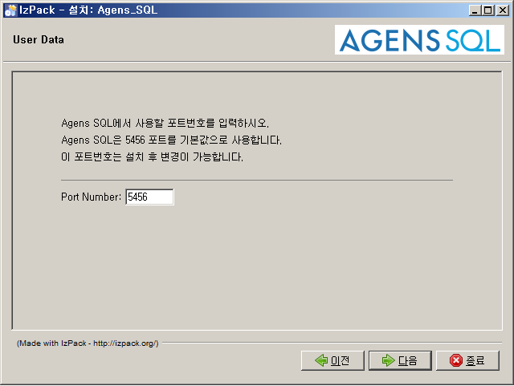
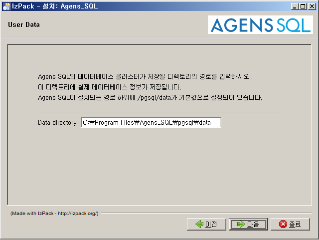
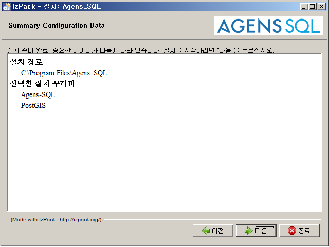
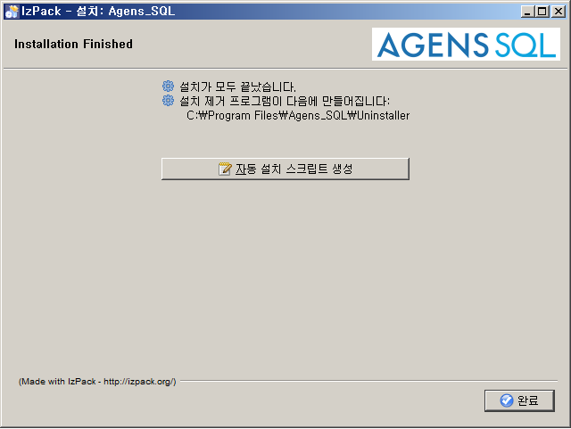

2.2. Windows
Agens SQL은 Windows 버전의 인스톨러를 이용한 제품 설치를 지원한다. Standard Edition과 Enterprise Edition은 설치할 수 있는 패키지의 수가 다르다는 것 외에는 설치 방법에 차이가 없다. 이 문서에서는 Enterprise Edition을 기준으로 설명한다.
2.2.1. 설치 전 준비사항
Agens SQL을 설치하기에 앞서 다음과 같은 사항이 준비되어 있어야 한다.
Agens SQL 인스톨러를 실행시키기 위한 Java JRE(Java Runtime Environment)가 설치되어 있어야 한다.
Agens SQL를 관리하기 위한 OS User가 생성 되어 있어야 한다. Agens SQL은 OS User의 이름을 'agens'로 사용할 것을 권장한다.
Agens SQL를 관리하기 위한 OS User로 접속한 상태에서 1장를 참고하여 Agens SQL 홈페이지에서 본인의 지원 플랫폼 및 운영체제에 맞는 인스톨러를 다운로드 받는다. (http://www.agens.co.kr/downloads/)
2.2.2. 설치 시작
cmd창을 열고 인스톨러를 다운로드 받은 곳으로 이동하여 다음의 명령어를 통해 인스톨러를 GUI 모드로 실행한다.
$ java -jar Agens_SQL_Version_Edition_Platform.jar
또는 '해당 파일 -> 마우스 오른쪽키 -> 연결 프로그램(H) -> Java(TM) Platform SE binary 클릭'으로 실행이 가능하다.
인스톨러가 정상적으로 실행되었다면 다음과 같이 초기화면이 나타난다.

제품의 버전정보와 이메일 그리고 제품 홈페이지에 대한 정보를 확인할 수 있다. [다음] 버튼을 클릭하여 설치를 계속 진행한다. 설치하는 도중에 [종료] 버튼을 클릭하여 설치를 취소 할 수 있다.
Agens SQL에 대한 소개

Agens SQL에 대한 소개가 나타난다. 확인 후 [다음] 버튼을 클릭하여 설치를 계속 진행한다. 설치하는 도중에 [이전] 버튼을 클릭하여 이전의 단계로 이동할 수 있다.
Agens SQL 라이선스 동의

Agens SQL의 라이선스 정보가 나타난다. 라이선스를 확인하고 '이 라이선스 조항에 동의한다'를 선택해야 [다음] 버튼이 활성화된다. [다음] 버튼을 클릭하여 설치를 계속 진행한다.
Agens SQL 설치 경로 설정

Agens SQL의 설치 경로를 설정하는 창이 나타난다. 디폴트 디렉터리는 'C:\Program Files\Agens_SQL'로 설정되어 있다. 설치 경로를 변경하려면 [찾아보기] 버튼을 클릭하여 Agens SQL가 설치될 디렉터리의 위치를 선택하거나 디폴트 설치 경로가 작성되어 있는 곳을 클릭하여 직접 설치 경로를 입력한다. 경로 설정을 마쳤으면 [다음] 버튼을 클릭하여 설치를 계속 진행한다.
새 디렉터리 생성 팝업

입력한 설치 디렉터리가 존재하지 않을 경우 팝업 창이 나타난다. 디렉터리를 생성할 것이라면 [OK] 버튼 클릭하여 다음 단계로 진행하고 그렇지 않으면 [취소] 버튼을 클릭하여 이전 단계로 돌아간다.
설치할 패키지 선택

설치할 패키지를 선택하는 창이 나타난다. 각 패키지의 이름을 클릭하면 해당 패키지에 대한 설명을 볼 수 있다. 체크박스에 체크 된 패키지들이 설치가 되며, 체크박스를 클릭하여 설치하고자 하는 패키지를 추가하거나 제거할 수 있다. 설치하고자 하는 패키지의 선택을 마치면 [다음] 버튼을 클릭하여 설치를 계속 진행한다.
포트 번호 설정

Agens SQL이 사용할 포트 번호를 설정한다. 입력 가능한 포트 번호는 0부터 65535까지의 숫자이며, 디폴트는 5456으로 설정되어 있다. 설치되는 머신에서 이미 사용중이거나 0부터 65535 사이의 정수값이 아니면 다음단계로 진행되지 않는다.
데이터베이스 생성 디렉토리 입력

데이터베이스가 생성될 디렉토리의 경로를 입력한다. 디폴트는 $INSTALL_PATH/pgsql/data로 설정되어 있다.
설치 패키지 목록 확인

Agens SQL을 설치할 경로와 선택한 패키지의 목록이 나타난다. [다음] 버튼을 클릭하면 설치가 시작된다.
설치 시작

설치 진행 상황을 확인 할 수 있다. 현재 창에서는 실시간으로 설치되고 있는 패키지와 파일을 확인 할 수 있다. 시스템 성능에 따라 약간의 시간이 소요될 수 있다. 진행 표시줄에 [완료됨]이 나타나면 문제 없이 정상적으로 설치가 완료된 것이다. [다음] 버튼을 클릭하여 마지막 단계로 이동한다.
Agens SQL 인스톨러 종료

설치가 모두 끝났다는 것을 알리는 창이 나타난다. [완료]를 클릭하면 인스톨러가 정상적으로 종료된다.